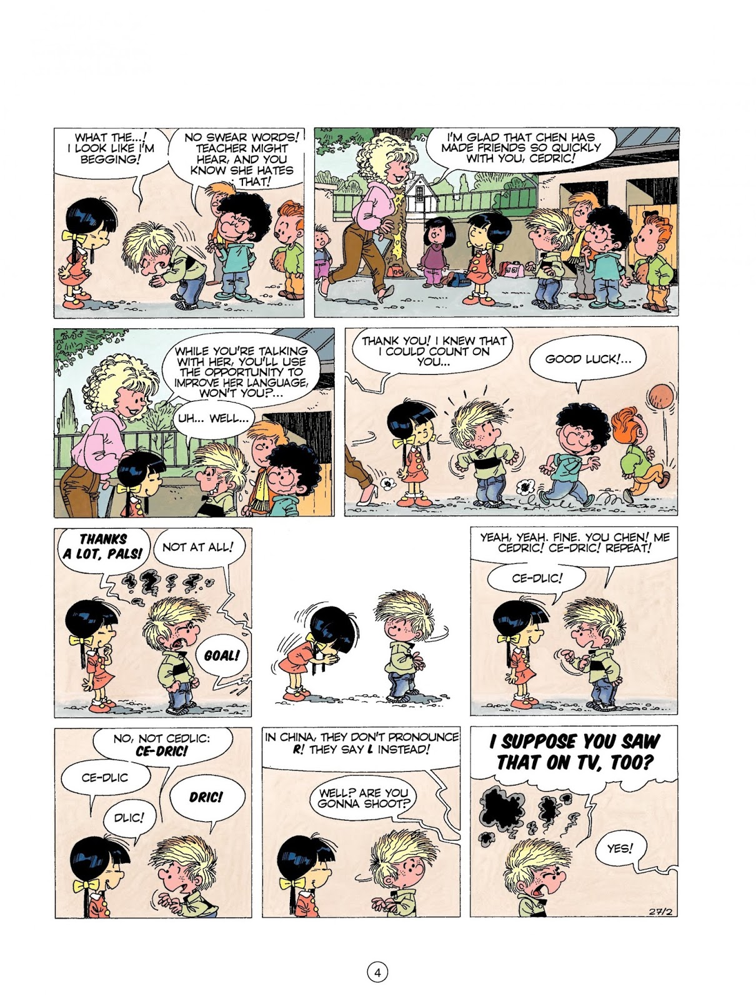
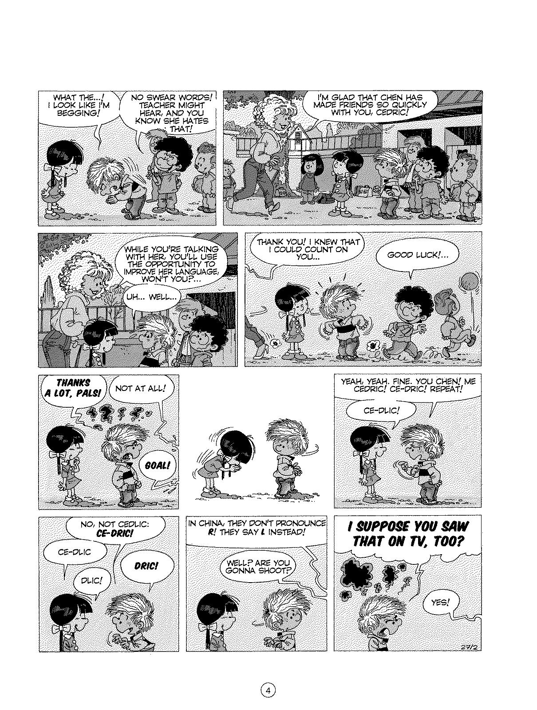
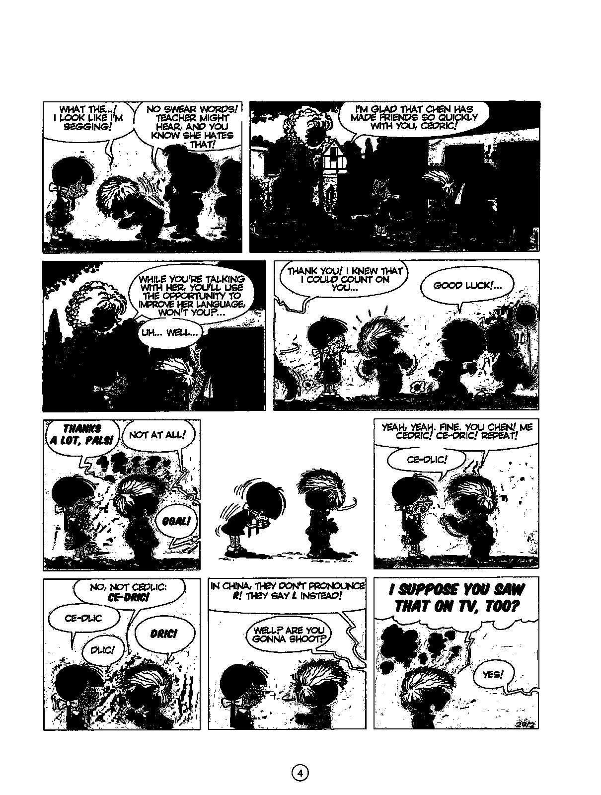

Chia ảnh ra thành các panel (hàng, ô) nhỏ để dễ đọc trên các thiết bị như điện thoại di động.
Xử lý ảnh thật là hay, có nhiều ý tưởng hữu ích: nhận dạng biển số, nhận dạng cháy, đọc số công tơ, phát hiện trộm,...
https://thigiacmaytinh.com/
Để làm những cái đó, chúng ta nên sử dụng OpenCV.
Việc tách các khung truyện tranh thì sử dụng Pillow của Python thôi.Cấu trúc của 1 trang truyện là:
+---Page-------------------------------------+
| | <- Gutter
| +-----------+ +-----------+ +-----------+ |-----
| | | | | | | |
| | Frame | | Frame | | Frame | | Row
| | | | | | | |
| +-----------+ +-----------+ +-----------+ |-----
| | <- Gutter
| +-----------+ +-----------+ +-----------+ |-----
| | | | | | | |
| | Frame | | Frame | | Frame | | Row
| | | | | | | |
| +-----------+ +-----------+ +-----------+ |-----
| | <- Gutter
+--------------------------------------------+
<->
Gutter
Gutter là các khoảng không gian trống chia các panel. Gutter trái, phải, trên, dưới có thể không tồn tại.
Chúng ta có thể kiểm tra 1 đường thẳng (ngang hoặc dọc) có phải là gutter hay không nếu nó chỉ có một màu.
Các bước:
mono_creator.py).file_writer.py)Với các hàng (rows), các ô (frames), chúng ta lưu 4 thông tin (left, top, right, bottom) theo pixel (hay theo phần trăm).
Thuật toán:
startRow, chúng ta di chuyển xuống dưới
theo chiều dọc khi mà cả dòng vẫn còn là gutter. Khi không còn là gutter
nữa thì sẽ là bắt đầu của một dòngfheight pixel (không phải là từng pixel một cho nhanh). fheight
là chiều cao tối thiểu của một ô. Di chuyển cho đến khi gặp một gutter
nữa hoặc đã đến cuối trang. Đó sẽ là kết thúc một dòng.Một khi chúng ta đã có các dòng (rows), chúng ta lặp lại các thao tác trên cho từng dòng. Bây giờ chúng ta sẽ di chuyển theo chiều ngang từ trái qua phải.
Ảnh gốc:
Ảnh mono 1:

Ảnh mono 2:

Chương trình có thể không split thành công các ô từ một trang mà bị xoay.
Ở một số trang, một số ảnh có thể "overflow" vào vùng gutter. Trong trường hợp đó, chương trình có thể không tách được 2 ô.
Nếu gutter không "clean" (ví dụ ảnh scan chất lượng thấp, chứa các pixel đen ngẫu nhiên) thì cũng có thể không tách được. Ảnh "clean" thường là ảnh mà gutter đều màu trắng.
Một trang truyện thường bao gồm nhiều khung (frame) được ngăn cách bằng các vùng trắng ngang/dọc gọi là gutter. Trang tiêu đề có thể có thêm heading ở đầu.